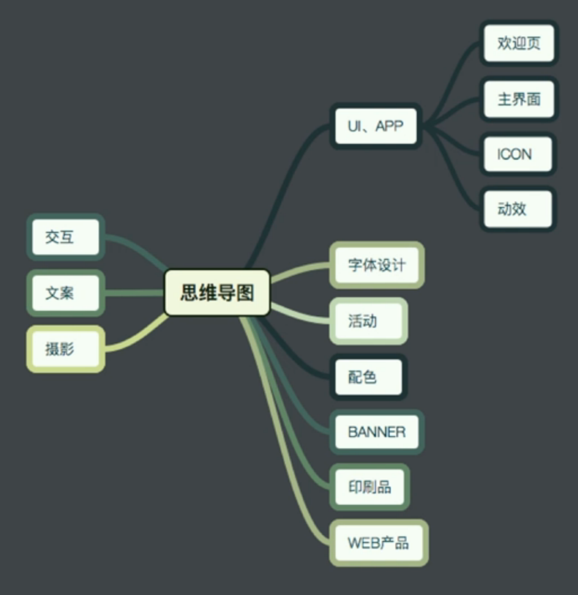
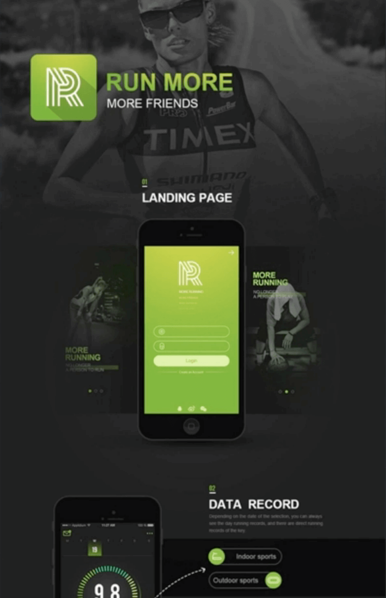
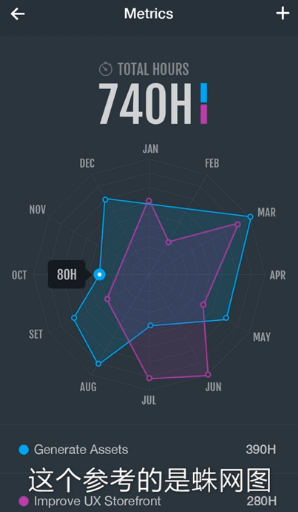
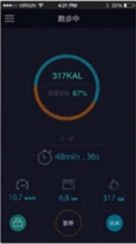
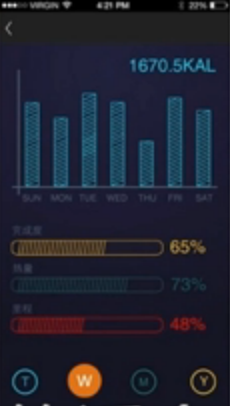
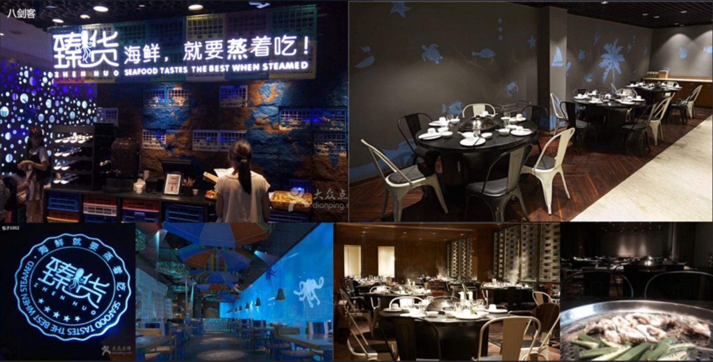
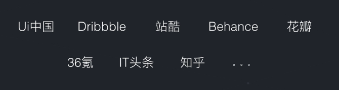

Table of Contents generated with DocToc
一些好的习惯可以帮助你在UI设计的道路上走得更好、更远。在UI设计中，储备素材、设计思考、了解行业这三个习惯可以让你做得更好，储备素材能让你在设计作品的时候有丰富的素材库。而设计思考能让你深入理解设计的本质，从而做出更好的设计。
当要设计一个东西的时候，最好的方法是找一个接近的素材作为基础，在它的基础上进行修改，这样就可以快速设计出需要的东西。
收藏素材的来源一般有：
收藏的原则：收藏的设计至少要有一个学习点。不同设计师对学习点会有不同的细分，可以参考这个：

收藏样例1

在黑色基调下配上绿色，感觉很刺激。以后如果想要做一些刺激一点的设计，就可以参考。
收藏样例2
通栏的曲线很酷，没有拘束，而且曲线上的一些提示点也很有意思。在圆点加了发光。
收藏样例3

参考蛛网图的设计，以及整理配色和排版
收藏样例4

参考图表设计的创意
收藏样例5

参考透明背景的效果
收藏样例6
参考整体配色以及中间图片的排版方式
当遇到一些印象很深刻的设计时，要去思考是什么东西让你有这么什么的印象或营造出了这种氛围，从而一点点思考这样设计的原因。

比如一进入上面这间店就会给人一种潜入到了海底的感觉，那到底是什么元素让你产生这种感觉呢？这是作为一个设计师需要深入去思考的。
作为设计师，在生活中要多注意感受美和丑，不要只是感觉完就算了，要去思考背后的原理，这就是设计的敏感度。
在买票的时候刷身份证的地方都是斜的，这么做的原因是为了不让你把身份证落下而设计的，虽然会损失一些便捷性，但这样还是值得的。
通过设计让中间的踏板和草地不一样，让人有一种想去踩的冲动，由此来保护草地。
了解互联网行业的动态，你需要关注两方面：
